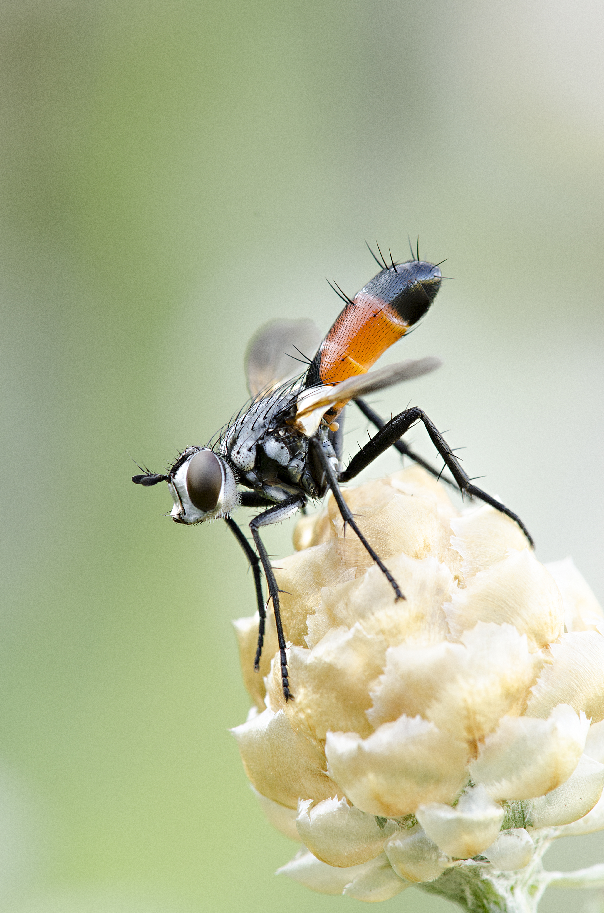
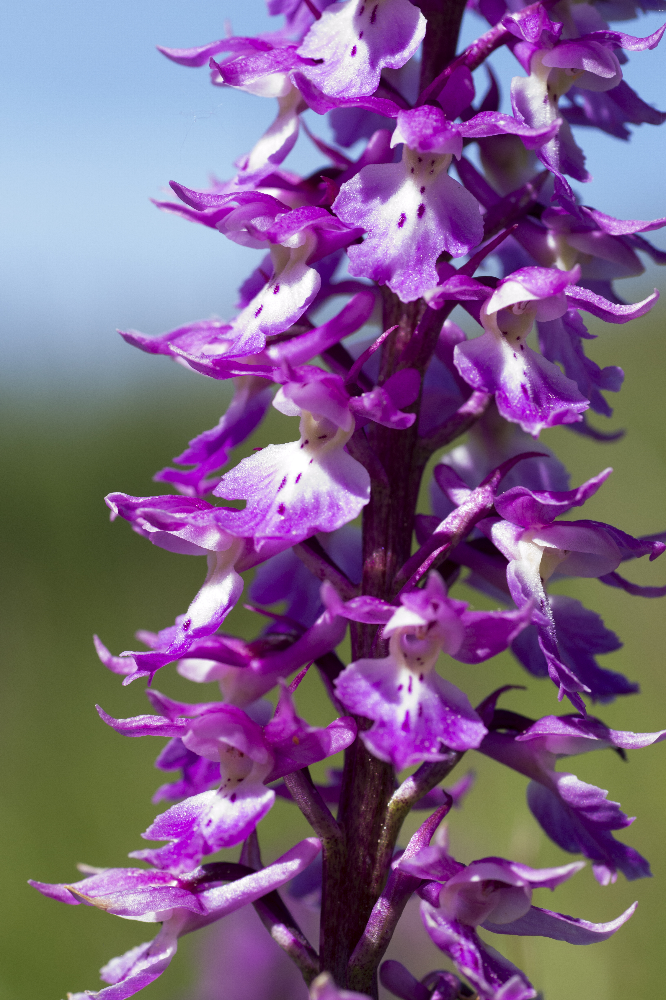
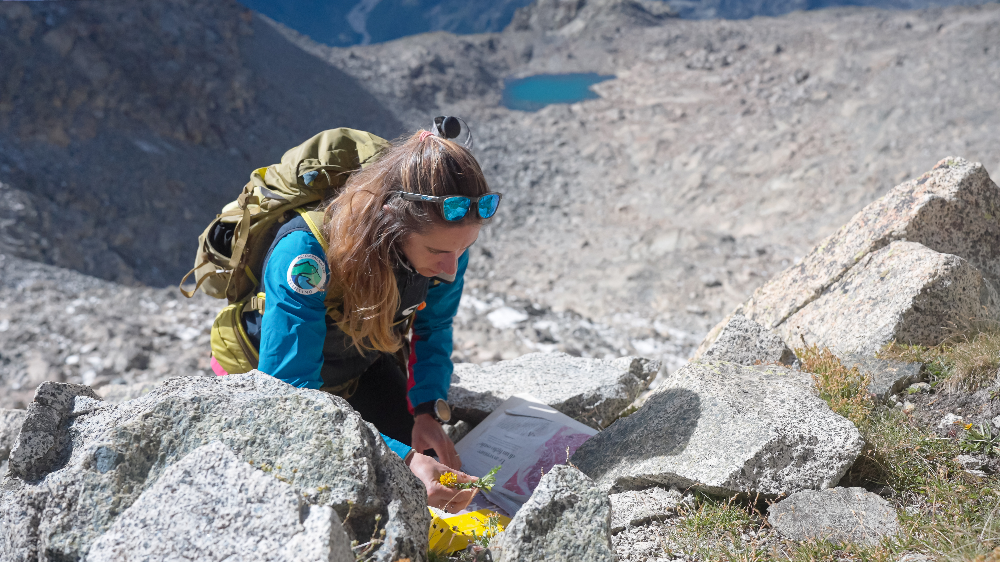
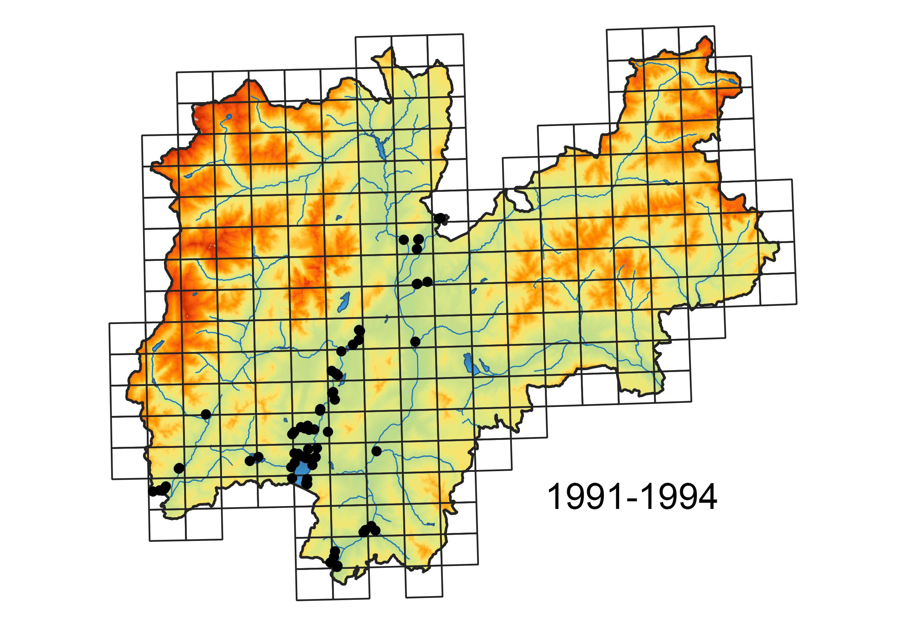
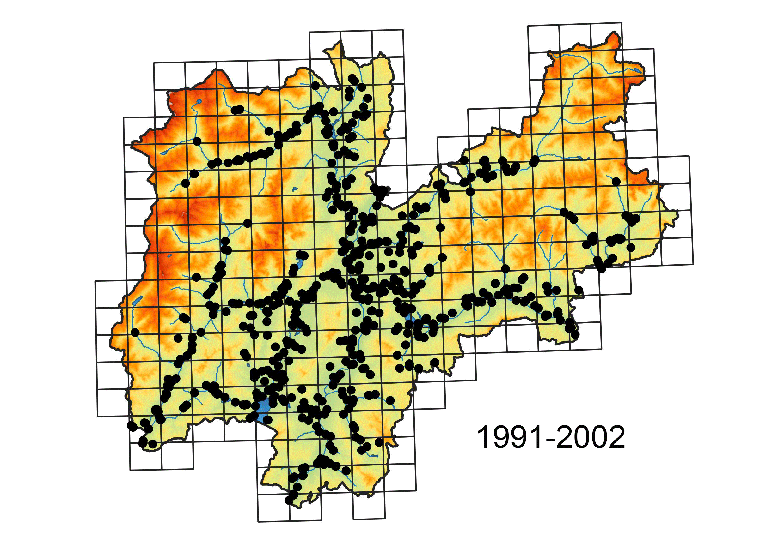
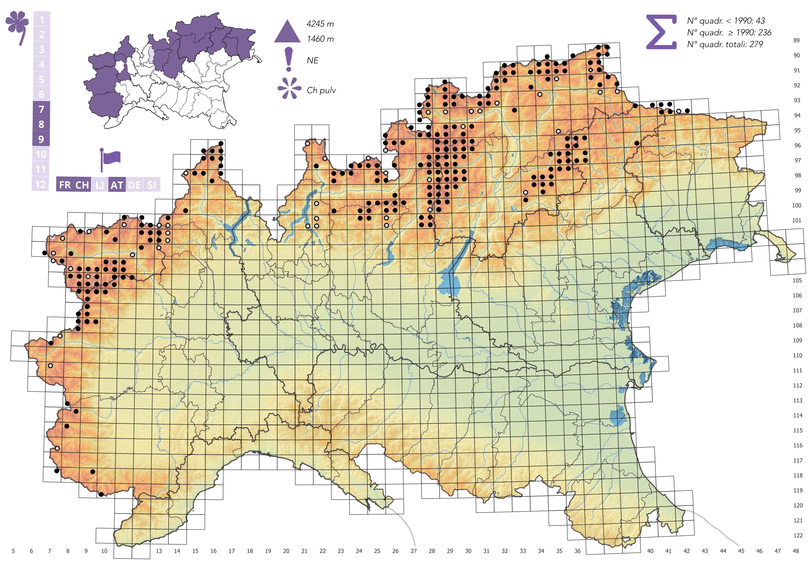
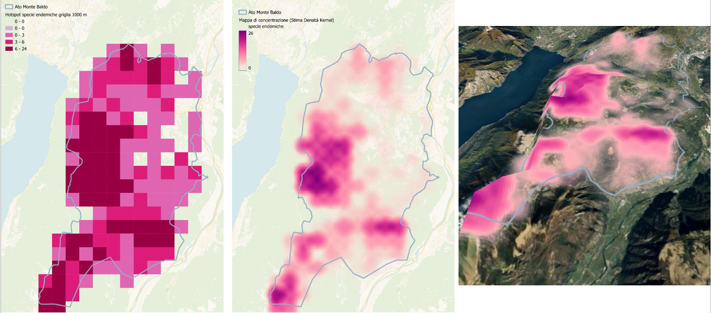
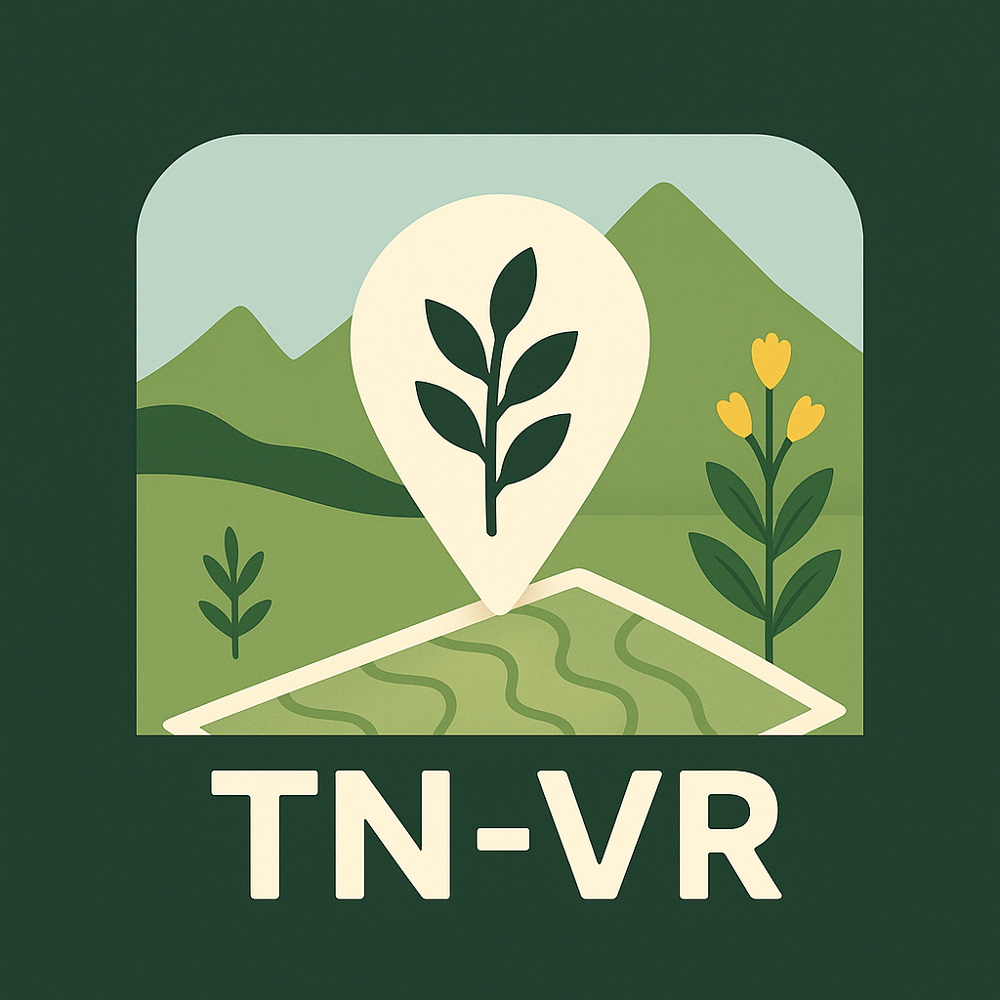

Fotografia macro

Cylindromyia sp. su Centaurea bracteata

Lamium maculatum

Orchis mascula

Solida esperienza in:
Mi interesso anche di:





App per rilevamenti floristici ottimizzata per Trento e Verona, ma applicabile a qualsiasi territorio.
Apri su App StoreForm personalizzati per registrare i dati di rilevamento in campo anche offline.
Form
